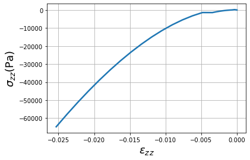
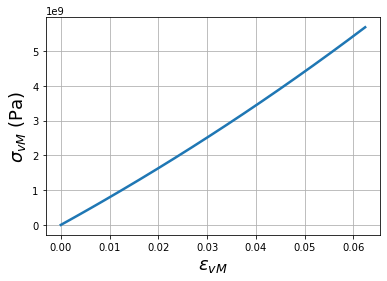

DAMASK tutorial #
creating necessary inputs for damask
runing the damask jobs
here more option is given to the user to select from damask python package itself.
Importing libraries and creating Project#
from pyiron_continuum import Project
from damask import Rotation
%matplotlib inline
pr = Project("damask_proj")
Creating the Damask job#
job = pr.create.job.DAMASK("damask_job")
Creating the necessary inputs#
Homogenization#
homogenization = pr.create.DAMASK.homogenization(
method='SX',
parameters={'N_constituents': 1, "mechanical": {"type": "pass"}}
)
homogenization = pr.continuum.damask.Homogenization(
method='SX',
parameters={'N_constituents': 1, "mechanical": {"type": "pass"}}
)
Elasticity#
elasticity = pr.continuum.damask.Elasticity(
type='Hooke',
C_11=106.75e9,
C_12=60.41e9,
C_44=28.34e9
)
Plasticity#
plasticity = pr.continuum.damask.Plasticity(
N_sl=[12],
a_sl=2.25,
atol_xi=1.0,
dot_gamma_0_sl=0.001,
h_0_sl_sl=75e6,
h_sl_sl=[1, 1, 1.4, 1.4, 1.4, 1.4],
n_sl=20,
output=['xi_sl'],
type='phenopowerlaw',
xi_0_sl=[31e6],
xi_inf_sl=[63e6]
)
Phase#
phase = pr.continuum.damask.Phase(
composition='Aluminum',
lattice= 'cF',
output_list=['F', 'P', 'F_e', 'F_p', 'L_p', 'O'],
elasticity=elasticity,
plasticity=plasticity
)
Rotation#
rotation = pr.continuum.damask.Rotation(Rotation.from_random, 10)
Material#
material = pr.continuum.damask.Material([rotation],['Aluminum'], phase, homogenization)
job.material = material
Grid#
grid = pr.continuum.damask.Grid.via_voronoi_tessellation(box_size=1., grid_dim=4, num_grains=10)
job.grid = grid
Loading#
load_step =[{'mech_bc_dict':{'dot_F':[1e-3,0,0, 0,'x',0, 0,0,'x'],
'P':['x','x','x', 'x',0,'x', 'x','x',0]},
'discretization':{'t': 10.,'N': 40},
'additional': {'f_out': 4}
},{'mech_bc_dict':{'dot_F':[1e-3,0,0, 0,'x',0, 0,0,'x'],
'P':['x','x','x', 'x',0,'x', 'x','x',0]},
'discretization':{'t': 60.,'N': 60},
'additional': {'f_out': 4}
}]
solver = job.list_solvers()[0]
job.loading = pr.continuum.damask.Loading(solver=solver, load_steps=load_step)
Runing the job#
job.run()
The job damask_job was saved and received the ID: 55
██████████████████████████████████████████████████ 100% ETA 0:00:00
██████████████████████████████████████████████████ 100% ETA 0:00:00
██████████████████████████████████████████████████ 100% ETA 0:00:00
██████████████████████████████████████████████████ 100% ETA 0:00:00
██████████████████████████████████████████████████ 100% ETA 0:00:00
██████████████████████████████████████████████████ 100% ETA 0:00:00
██████████████████████████████████████████████████ 100% ETA 0:00:00
██████████████████████████████████████████████████ 100% ETA 0:00:00
██████████████████████████████████████████████████ 100% ETA 0:00:00
██████████████████████████████████████████████████ 100% ETA 0:00:00
██████████████████████████████████████████████████ 100% ETA 0:00:00
██████████████████████████████████████████████████ 100% ETA 0:00:00
Post-processing#
job.plot_stress_strain(component='zz');

job.plot_stress_strain(von_mises=True);
